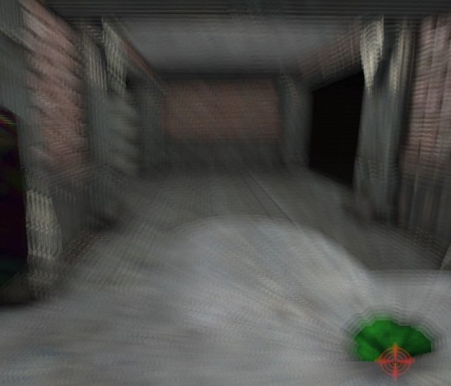

UDN
Search public documentation:
RadialBlurCH
English Translation
日本語訳
한국어
Interested in the Unreal Engine?
Visit the Unreal Technology site.
Looking for jobs and company info?
Check out the Epic games site.
Questions about support via UDN?
Contact the UDN Staff
日本語訳
한국어
Interested in the Unreal Engine?
Visit the Unreal Technology site.
Looking for jobs and company info?
Check out the Epic games site.
Questions about support via UDN?
Contact the UDN Staff
径向模糊
概述

设置
材质
使用特定材质的不透明通道缩放模糊向量的大小。DepthPriorityGroup（深度优先群组）
在场景深度优先组层中特效应该渲染。例如，将它设置为 SDPG_Foreground 将会影响所有图元，而将其设置为 SDPG_World 不会影响 SDPG_Foreground 图元。BlurScale（模糊缩放比例）
全局缩放特效生成的模糊量。它会缩放模糊生成的速度向量的大小。BlurFalloffExponent（模糊衰减指数）
会决定模糊量从特效的中心开始衰减的速率。BlurOpacity（模糊不透明）
仅在 bRenderAsVelocity 为 False 时适用，而且会决定渲染模糊特效的 alpha 混合量。MaxCullDistance（最大剔除距离）
会决定从视图原点到不会再进行渲染的模糊特效的距离。特效会在 DistanceFalloffExponent 的基础上逐渐过渡到这个 MaxCullDistance 阀值。DistanceFalloffExponent（距离衰减指数）
根据到当前视图原点的距离呈指数衰减。值越高，衰减速率越快。该设置连同 MaxCullDistance 一起会根据距离决定生成的模糊量。bRenderAsVelocity（渲染为速度）
如果值为 True，那么使用运动模糊后期特效的速度传递渲染特效。要了解更多信息，请参阅 可用的模糊方法。bEnabled（启用）
开启，会决定特效是否应该赋给场景并进行渲染。可用的模糊方法
- 直接采样场景颜色缓存
- 借助运动模糊中的每渲染一次模糊